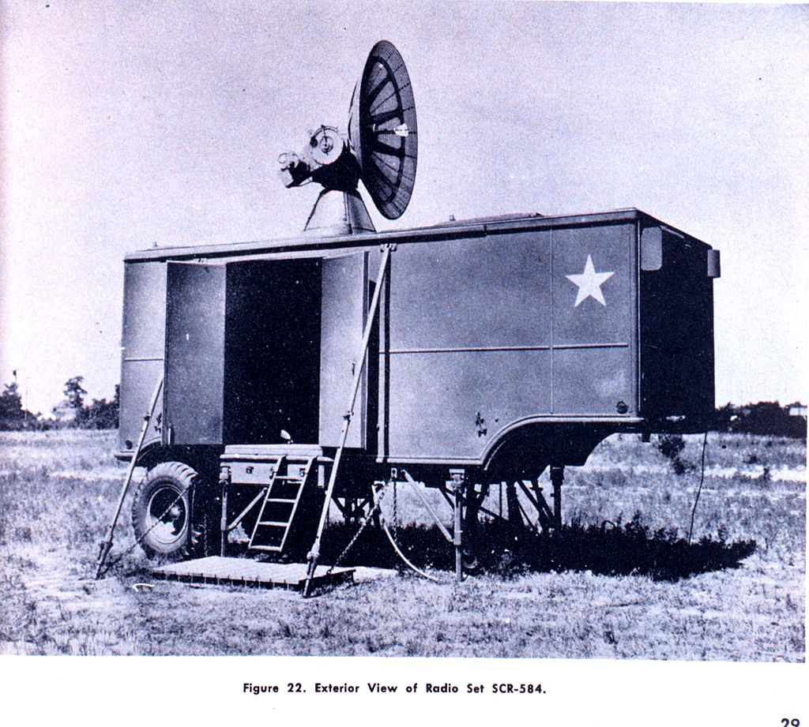
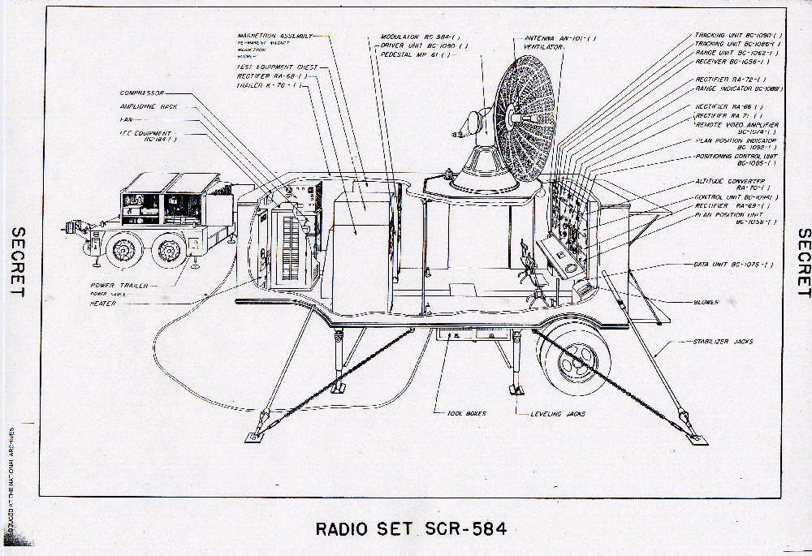
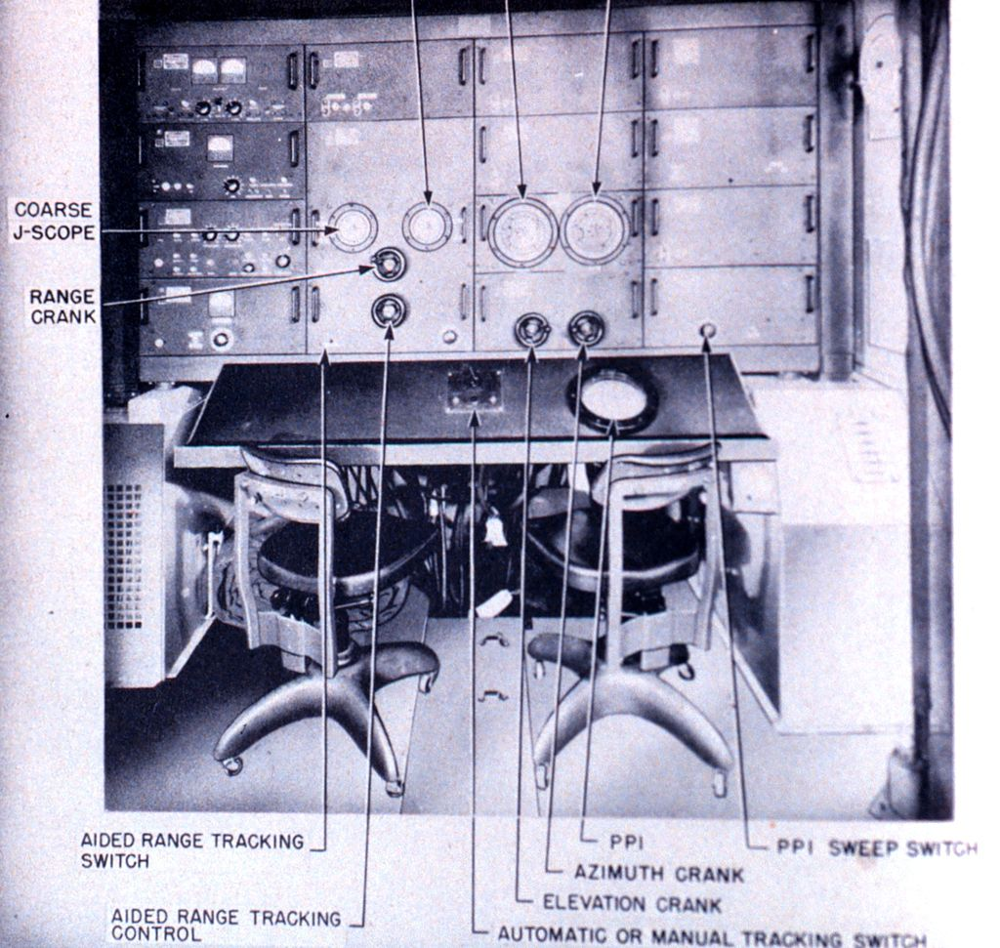
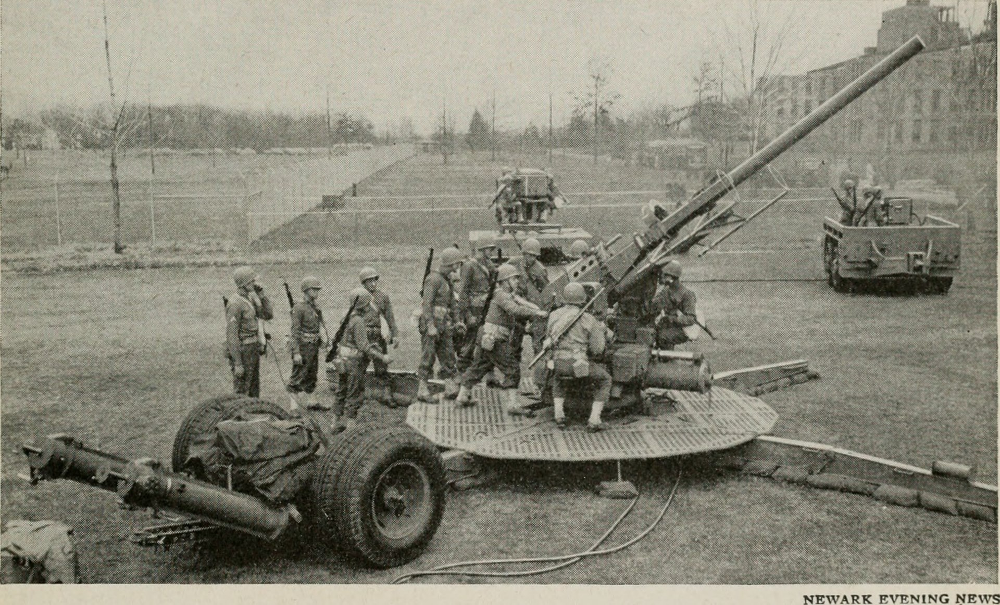
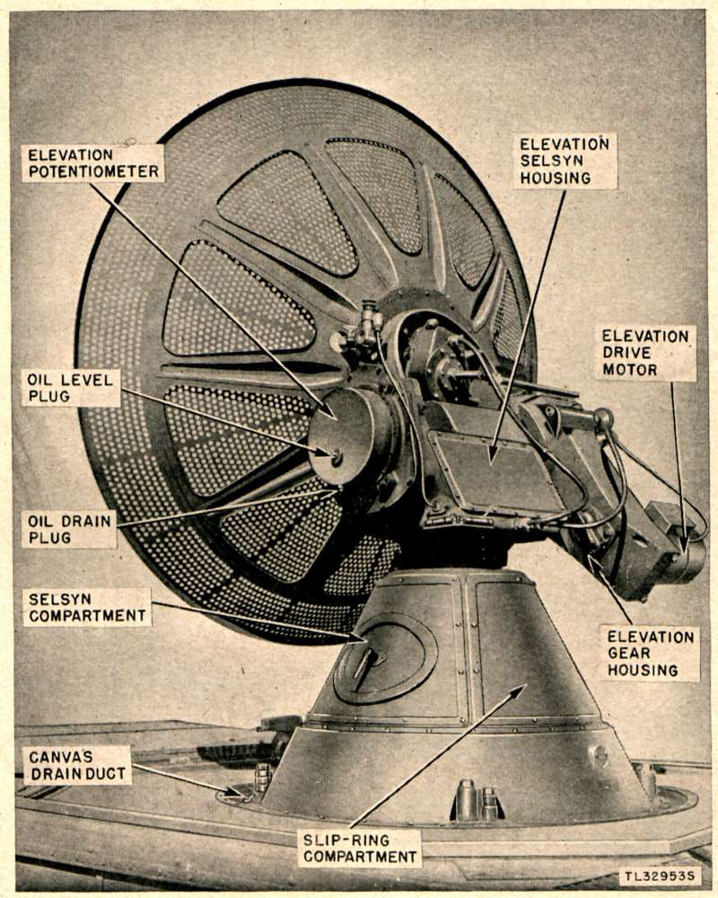

S band 레이더의 등장 (1) - 육군이 먼저 간다
게시: 2025-01-02T06:30:55+09:00
<진정한 미영 동맹의 시작> 이미 여러 번 이야기했던 1940년 Tizard 사절단의 방미에서는 주로 영국의 첨단 군사 기술들이 미국에게 제공된 셈이지만, 실은 영국측 과학자들도 미국의 기술력에 감탄하기도 했었음. 가령 레이더 기술에 대해 큰 자부심을 가지고 있던 영국은 이 회담에서 미국도 해군의 CXAM과 육군의 SCR-270 등의 레이더를 개발하고 있다는 것을 알고 상당히 놀랐다고. Tizard 사절단의 영국측 과학자들은 모든 기술을 퍼주기로 작정을 하고 온 사람들인데도, 대체 어디까지 퍼줘야 할지 상대방을 믿지 못해 조심스러운 입장이었고, 미국측에서도 영국의 꼰대들이 과연 풀어놓을 획기적 기술을 가지고 있을까 매우 의심스러워하는 입장이었는데, 서로가 독자적으로 비슷한 기술의 레이더를 만들어낸 것을 알고는 분위기가 확 바뀌어 서로의 고충을 터놓고 이야기하기 시작.

(미육군의 야심작, 대공포 조준용 레이더 SCR-268. Lobe switching이라는 복잡한 기술까지 써가며 200 MHz의 한계를 극복하려 애썼으나 결국 한계를 통감하는 수준에서 끝남.) 그때 미국 레이더 개발자들, 특히 육군의 포병 조준용 레이더(gun-laying)인 SCR-268을 개발 중이던 과학자들은 아무리 노력해도 원하는 정확도가 나오지 않아 고민이라는 이야기를 했음. 그 낮은 정확도의 원인은 아무래도 200 MHz의 꽤 긴 주파수를 사용했기 때문인데, 그걸 극복하기 위해 3 GHz 정도의 10cm 파장을 쓰면 좋겠으나 현재 연구 중인 클라이스트론(klystron) 장치로는 낼 수 있는 출력이 너무 낮다는 이야기까지 나옴. 이 이야기가 나오자 여태까지 꺼낼까 말까 눈치를 보고 있던 영국측에서는 상자 속에서 과감히 cavity magnetron의 시제품을 꺼내듬. 이 괴상한 구리쇠 뭉치에 대한 설명과 함께 데모까지 본 미국측은 영국에 대한 여태까지의 모든 의심을 버리고 영국과 모든 기술을 공유하기로 함. 어떻게 보면 지금까지 이어지는 미-영 동맹의 진정한 탄생이 바로 이 캐버티 마그네트론에서 비롯된 것이라고 해도 과언이 아닐 정도. <캐버티 마그네트론의 위력> 여태까지 온갖 삽질을 하며 고생을 하던 미국의 레이더 개발팀은 캐버티 마그네트론을 도입하면서 많은 숙제들을 해결. 그 첫번째 결과를 뽑아든 것은 바로 육군의 대공포 조준용 레이더인 SCR-584. SCR이라는 것은 미육군이 레이더 장비에 붙이던 제식명인데, 미육군답게 그냥 Set Complete Radio (전파 완비 세트) 라는 뜻의 재미없는 약어. 영국이 제공해준 캐버티 마그네트론 기술을 이용하여 MIT Radiation Laboratory에서 개발한 이 레이더는 3 GHz의 S-band 주파수를 이용하여, 전파 빔의 퍼짐각은 고작 4도 정도였고, 오차 범위가 0.06도. WW2 때라는 것을 생각하면 정말 시대를 앞서가는 초정밀 레이더였음.

(SCR-584 레이더 세트. 발전기를 빼면 안테나와 송출 회로, 오퍼레이터 콘솔 등이 모두 차량 하나에 들어감.)

(SCR-584의 구조를 더 자세히 보여주는 그림)

(SCR-584 오퍼레이터 콘솔의 모습) 특히 이 SCR-584 레이더는 일종의 아날로그 컴퓨터인 M9 gun director와 결합되면서 진짜 위력을 발휘. 이 M9 포병 디렉터는 1940년 5월, Bell 연구소의 David Parkinson이라는 엔지니어가 꿈에 자신이 대공포좌에 있는데 분압계(potentiometer, 가변 저항기의 일종으로, 전기 회로에서 전압을 조절하거나 측정하는 데 사용되는 장치)가 그 대공포좌에 놓여있는 것을 본 뒤에 영감을 얻어 설계하기 시작했다는 전설이 내려오는데, 이 포병 디렉터라는 것은 포의 조준을 사람이 아니라 입력된 신호에 의해 자동으로 수행해주는 계산기. 지상에 고정된 수km 밖의 목표물을 맞추는 것도 어렵지만 2~3km 상공을 시속 400km로 날아가는 하인켈 폭격기를 조준해서 쏘아 떨어뜨리는 것은 사실상 불가능에 가까운 일. 그런데 그 불가능을 가능하게 만들겠다는 일념으로 만든 것이 바로 포병 디렉터. 즉, 적기의 현재 위치와 이동 방향, 속도, 고도, 대공포탄의 비행 속도, 신관 타이밍, 공기 밀도와 바람의 방향과 풍속 등을 입력하면 그 모든 것을 감안하여 다음 순간 적기의 위치를 계산한 뒤 전기 모터로 연결된 대공포를 자동으로 조준해주는 물건. 포병들이 할 일은 포탄을 장전하고 방아쇠를 당기는 것 뿐. 이런 것이 가능했던 것은 당시 미국은 servomechanism, 즉 서보 기술(대충 자동 제어장치라는 뜻)이 꽤 탄탄했기 때문.

(미육군의 90mm 대공포의 모습. 중앙의 저 배경 쪽에 뭔가 수레에 얹힌 상자 같은 것이 보이는데 그것이 바로 M9 gun director. 이 사진은 개발사인 Bell 연구소에서 찍은 것.) 하지만 그렇게 전기모터 제어에 의한 서보 기술이 있다고 해도 입력값이 정확해야 출력값도 정확할 텐데, 적기의 위치와 속도 등은 그렇다치고, 특히 고도 정보는 어떻게 알아내지?? 전에 소개했던 (https://nasica1.tistory.com/786 참조), 고도 측정까지 가능한 레이더였던 SCR-268이 있긴 했지만, 고도는 물론이고 방위각 정보조차도 그다지 정확하지 않아서 결국 최종 조준은 사람이 눈으로 해야 했으며, 밤에는 탐조등을 어느 방향으로 비출지 유도하는 정도로 밖에 사용할 수 없었음. 그 모든 것이 200 MHz 정도의 긴 파장을 썼기 때문에 발행한 일. 이 모든 문제를 해결해준 것이 바로 캐버티 마그네트론을 이용한 SCR-584 레이더. SCR-584 레이더에서 얻은 정보는 사람을 거치지 않고 그대로 M9 포병 디렉터로 연결되었고, M9 디렉터에서는 4가닥의 전기줄이 나와서 4문 1조인 90mm 대공포로 연결되었음. 전기 모터로 조작되는 유압장치에 의해 그 4문의 90mm 대공포가 자동 조준되었던 것.

(SCR-584의 접시형 안테나의 세부 구조) 아직 디지털 컴퓨터도 없던 시절, 저런 아날로그식 자동 조준 장치가 과연 효과적이었을까? 매우 효과적이었음. 처음 실전에 사용된 것이 1944년 2월의 유명한 안지오(Anzio) 상륙 작전이었는데, 교두보를 폭격하기 위해 야간에 날아든 독일 공군 Ju 88 폭격기 12대를 기다리던 것이 바로 이 SCR-584 + M9 포병 디렉터 + 90mm 대공포였음. 야간에 날아든 것이니 큰 위험 부담이 없다고 생각하던 융커스 폭격기들은 12대 중 무려 5대가 레이더에 의해 자동 조준된 대공포에 맞아 격추됨. 심지어 이때는 아직 미군이 자랑하던 비밀 병기인 VT 신관도 아직 사용되지 않았는데도 그랬음. 1944년 중반 이후에는 영국에 날아드는 독일의 크루즈 미쓸 V-1 방어에 투입되었는데, 날아드는 V-1의 2/3 가까이가 이 대공시스템에 의해 격추됨.